Contents
%
1.- Crea una función que se llame fun1 y reciba dos parametros  y 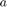 la función debe
y 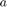 la función debe
%regresar la evaluación $f[n]=r^ncos[\Omega n]+ r^nsen(\Omega n)j$, esta función debe trabajar con %$r\in R^+$, $\Omega\in R$ y $n\in N^n$. Debe mostrar su código en el reporte (sin ejecutar). syms n f1 = fun1(pi,4, n); % Funcion fun1: % function [ f_1 ] = fun1( omega ,r ) % syms n % f1 = r^n*cos(omega*n)+r^n*sin(omega*n); % f = @(n) f1; % f_1 = f(n); % end
2.- Construya una función que gráfique funciones de en el formato de su elección
y pruebe su código mostrando la gráfica de 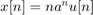 vs 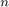 para 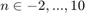 para  , no debe incluir el código, solo el uso de la función para mostrar la gráfica, puede utilizar una función anonima para este fin
, no debe incluir el código, solo el uso de la función para mostrar la gráfica, puede utilizar una función anonima para este fin
syms n u = @(n) 1*(n>=0); a = 0.9; f2 = @(n) n.*(a.^n).*u(n); n2 = 0:1:10; Grafica2(n2,f2(n2),'Gráfica en R')
3.- Construya una función que gráfique funciones de en el formato de su elección y
pruebe su código mostrando la gráfica de la función exponencial del primer problema, no debe incluir el código, solo el uso de la función para mostrarla gráfica. Reporte la gráfica de 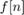 para 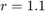, 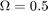 y 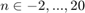 (recuerde que ya tiene una función para esto). Reporte la gráfica de 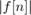 vs y 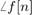 vs (puedes con sultar con help la descripción de abs, angle, atan2). Solo reporte las graficas.
r = 1.1;
omega = 0.5;
n3 = -2:1:20;
f3 = fun1(omega, r, n3);
Grafica3(n3,f3(n3),'Gráfica en R2');
4.- Programe una función que calcule la energía de una señal en tiempo discreto la función se debe llamar energiadis
La función recibe dos parámetros de entrada: el vector de tiempo y las alturas asignadas. La función regresa la energía de la señal y despliega la gráfica de la señal. Debe mostrar su código en el reporte